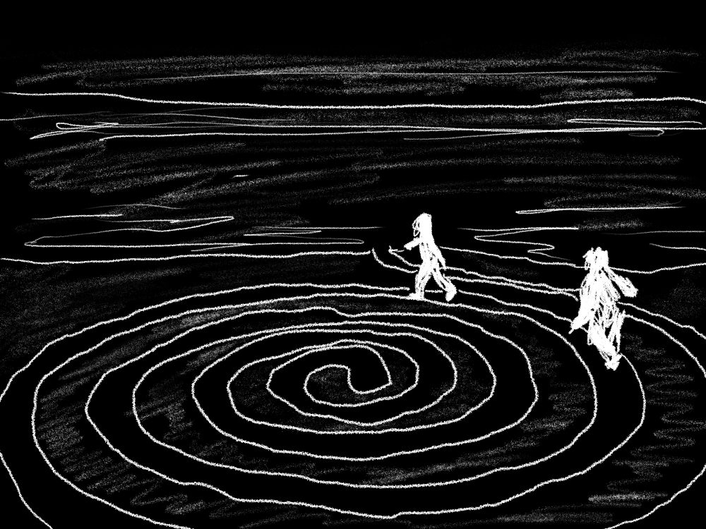

Title
Cyclemarks
This entry sits within our library of influences; works we admire that inform our practice. Something out of place? Contact us.
Description
CycleMarks is a digital platform designed to liberate users from algorithm-driven social media feeds by allowing them to deliberately choose what content they wish to receive and determine the frequency of its delivery. It offers users a tool to customize their information intake, promoting intentional engagement with digital content.

Cyclemarks helps you remember what you want to revisit.
View the image source.